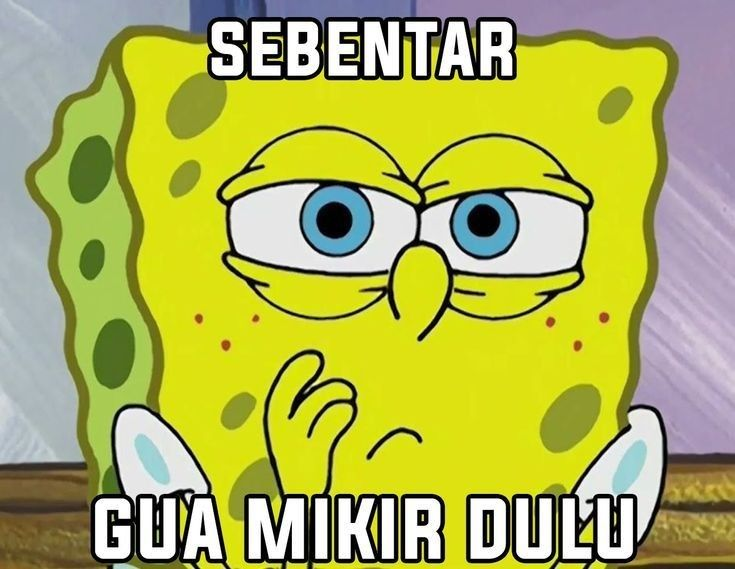

Kelompok 4
Disusun Oleh:
Christian Natanael
NIM: 202357201006
Adam Wahyu Hariyadi
NIM: 202359201009
Deseri Lahagu
NIM: 202359201040
Komunikasi yang efektif adalah fondasi utama dari kesuksesan sebuah tim dan perusahaan.
Banyak masalah kerja terjadi karena komunikasi yang buruk, bukan karena kurangnya kompetensi teknis.
Komunikasi bukan hanya tentang "apa yang dikatakan", tapi juga "cara mendengarkan" & "bahasa tubuh".
Apa yang membuat kita gagal menjadi pendengar baik?
Notifikasi HP, layar laptop, suasana kantor bising.
Merasa sudah tahu apa yang akan dikatakan orang lain.
Memotong pembicaraan untuk memasukkan pendapat pribadi.
Kurang fokus karena beban kerja tinggi atau kelelahan.
6 Langkah praktis menjadi pendengar aktif di tempat kerja.
Berikan kontak mata, tunjukkan fokus.
Ajukan pertanyaan klarifikasi.
Parafrase ucapan rekan kerja.
Catat poin penting saat rapat.
Pahami posisi pembicara.
Anggukan tanda mengikuti pembicaraan.
Contoh (Summarize): "Jadi maksud Pak Budi, tenggat waktunya dimajukan ke hari Kamis ya?"
Penyampaian pesan tanpa menggunakan kata-kata tertulis maupun lisan.
Seringkali lebih jujur daripada kata-kata. Jika ucapan dan bahasa tubuh bertentangan, orang cenderung mempercayai bahasa tubuh Anda.
Tanda hormat, jujur, perhatian, & percaya diri.
Senyum atau kerutan dahi mengubah arti kata.
Tegak = siap. Bersedekap = tertutup/defensif.
Nada, tempo, volume. Cara bicara sangat penting.
Batas ruang personal. Terlalu dekat = tidak nyaman.
Mengapa harus memperhatikan postur dan gestur?
Klien/rekan percaya pada individu bertubuh terbuka & tenang.
Nada bicara yang rendah & tenang mendinginkan perdebatan.
Pemimpin berwibawa namun tetap mudah didekati (approachable).
Aturan Emas: Pastikan komunikasi verbal (kata) dan non-verbal (tubuh) Anda berjalan beriringan.
"Saya sangat antusias dengan proyek ini,"
...diucapkan dengan nada datar sambil melihat layar HP.
"Saya mengerti kekhawatiran Anda,"
...diucapkan dengan nada empati, kontak mata, condong ke depan.
SUMMARY
Mendengarkan aktif dan komunikasi non-verbal adalah keterampilan (soft skills) yang bisa dan harus dilatih.
Dengan mempraktikkannya, kita menciptakan lingkungan kerja yang positif, kolaboratif, dan minim kesalahpahaman.
Daftar sumber yang digunakan dalam presentasi
